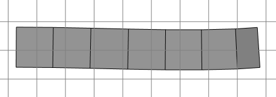
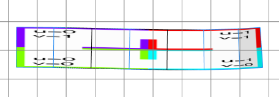
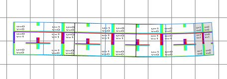
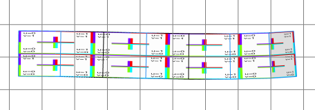

tileUV operation
Syntax
tileUV(uvSet, textureWidth, textureHeight)
Parameters
- uvSet (float)
Number of texture coordinates set (integer number in [0,9]). The numbering corresponds to the texture layers of the material attribute, see also Texturing: Essential Knowledge. - textureWidth (float)
The texture width in world coordinate system units (e.g. meters). Values < 0 are allowed and mirror the texture. The operators ~ (floating) and ’ (relative) can be used, see below. 0 is allowed and means “don't touch this axis”. - textureHeight (float)
The texture height in world coordinate system units (e.g. meters). Values < 0 are allowed and mirror the texture. The operators ~ (floating) and ’ (relative) can be used, see below. 0 is allowed and means “don't touch this axis”.
Description
The tileUV operation rescales the texture coordinates of the selected uv-set such that the uv space gets tiled with tiles of a given width and height. The textureWidth and textureHeight parameters support usage of the floating and relative operators to avoid complex calculations with the texture space dimension. For example, if the parameter textureWidth is set to ~20, the projection matrix is initialized such that the surface of the current shape's geometry is exactly spanned with texture tiles of approximately size 20 along the u direction. Or if the paramter textureHeight is set to ’0.5, the texture will be repeated twice along the height.
Related
- deleteUV operation
- normalizeUV operation
- projectUV operation
- rotateUV operation
- scaleUV operation
- texture operation
- translateUV operation
- setupProjection operation
- scope attribute
- material.map attribute
Examples
Street Tiling
 |
A multi-face street shape. |
 |
Street-->
texture("builtin:uvtest.png")
The default texture coordinates.
|
 |
Street-->
texture("builtin:uvtest.png")
tileUV(0, 20, 10)
The tiled texture coordinates. The tile width (in u-direction) is exactly 20 meters and the tile height is exaclty 10 meters. Some tiles are cut.
|
 |
Street-->
texture("builtin:uvtest.png")
tileUV(0, ~20, '0.5)
Usage of the ~ and ' operators. The tile width is roughly 20 meters, such that the whole available space is exactly filled, and the tile height is half of the available space sucht that exaclty two tiles fit in.
|
Copyright ©2008-2023 Esri R&D Center Zurich. All rights reserved.